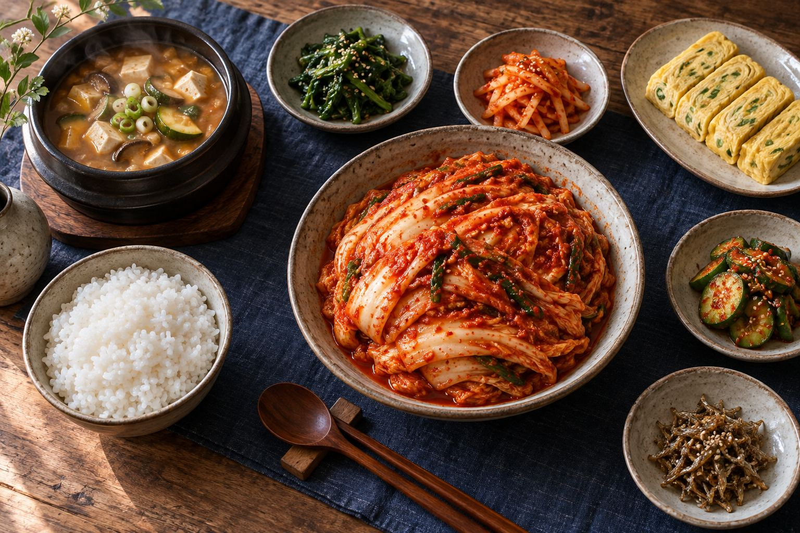

한식레시피
김치부터 명절 음식까지, 전통 밥상에서 자주 찾는 메뉴를 모았습니다.
조회가 많은 전통 요리는 공개된 만개의레시피 목록을 참고했습니다. 표시 조회수는 2026년 9월 확인 당시의 대략값이며, 전체 플랫폼 순위는 아닙니다. 아래 조리법은 집에서 만들기 쉽게 정리한 버전이므로 원문과 다를 수 있습니다.
김치 담그기부터 찌개, 반찬, 한 그릇 음식까지. 필요한 재료와 순서를 한눈에 보고 편하게 따라 해 보세요.

김치부터 명절 음식까지, 전통 밥상에서 자주 찾는 메뉴를 모았습니다.
조회가 많은 전통 요리는 공개된 만개의레시피 목록을 참고했습니다. 표시 조회수는 2026년 9월 확인 당시의 대략값이며, 전체 플랫폼 순위는 아닙니다. 아래 조리법은 집에서 만들기 쉽게 정리한 버전이므로 원문과 다를 수 있습니다.